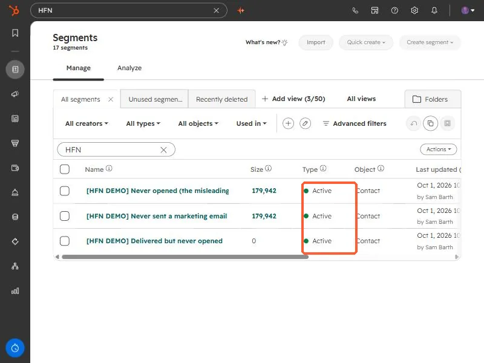

Short answer
An active segment adds and removes records automatically as they meet or stop meeting its criteria. A static segment is fixed at creation, so new records that match are not added, though you can add records by hand. Use active for ongoing things like a newsletter list or a lifecycle stage. Use static for one-time sends, event attendees, or a snapshot you do not want to change. The Type column in the segment list shows which is which.
1. What each type does
- Active. Membership is dynamic. Records join when they meet the criteria and leave when they stop meeting them. You cannot add records by hand.
- Static. Membership is fixed at creation. New records that match are not added. You can add and remove records manually.
2. How to pick
HubSpot's guidance is useful here. Active suits regular newsletters with a changing audience, outbound calling based on changing behavior, and properties that change often such as lifecycle stage. Static suits one-time or infrequent campaigns, manually grouped records, event attendees, internal newsletters, and bulk deletion jobs.
If the answer to "who should be on this list next month" is "whoever matches", build an active segment. If it is "the same people as today", build a static one.
3. Check what you have
Open Segments and look at the Type column. In this demo portal every segment is Active, which is what you want when the segment is a count that should follow the data. A segment built to answer "who was emailed but never opened" is an example. Its size changes as people are emailed and open.


- A static snapshot is the safer choice before a bulk delete, because the list will not change under you.
- An active segment used as a workflow trigger will keep enrolling new matches, which is usually the point.